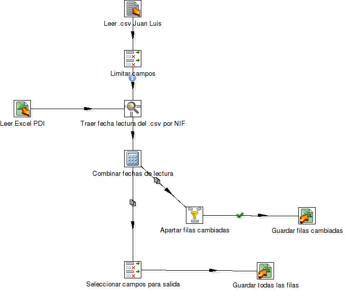

Software libre para la integración de información en la Universidad de Cádiz
Quincena de la Ingeniería, 2014
Presentación
¿Quién soy?
- 2003/09 - 2008/07: Estudiante de Ingeniería Informática
- 2008/10 - 2010/11: Profesor sustituto
- 2010/11 - 2014/01: Becario predoctoral
- 2014/01 - sigue: Técnico investigador en la DGSI
Proyectos y contribuciones
- PFC: XMLEye (II CUSL)
-
Investigación: servicios web e ingeniería dirigida por modelos
- BPELUnit: pruebas unitarias para WS-BPEL
- Eclipse Epsilon: ingeniería dirigida por modelos
- GAmera: mutación evolutiva para WS-BPEL
- SODM+T: mi tesis
- Takuan: generación dinámica de invariantes para WS-BPEL
- ... y unos cuantos más :-)
¿Qué hacemos en la DGSI?
DGSI = Dirección General de Sistemas de Información
-
Intermediarios entre demandas de información y fuentes de datos:
- Desde fuera: Ministerio (SIIU) y Junta de Andalucía
- Desde dentro: Equipo de Gobierno, Ordenación Académica, Investigación, Innovación Docente...
-
Ayudamos a organizar los sistemas de información de la UCA:
- PHP: con framework (p. ej. Symfony)... o sin él
- Django
- Restos de Zope/Plone
- Y un largo etcétera
Datos ➯ Información
Pasos
- Se localizan las fuentes de datos
- Se cargan en el
almacén de datos - Se explotan los datos para sacar información
Localizar las fuentes
- ¿Qué es lo que tenemos?
- ¿Quién es el responsable?
- ¿Cuándo se actualiza?
- ¿Cómo se mantiene?
- ¿De qué forma se almacena?
En este paso pueden encontrarse problemas de calidad:
puede haber que revisar el origen.
Carga en el almacén de datos
- Es el repositorio central con toda la información.
- Debe estar bien organizado en áreas de interés.
- Los problemas de calidad de datos deben estar resueltos.
- Identificadores únicos y formatos de campos uniformes (p. ej. sexo o ID personal).
Carga en el almacén de datos
En resumen...

Explotación de los datos
¿Y ahora qué?
Depende del tipo de toma de decisiones,
y del tiempo del destinatario.
- Operacionales: listados de operaciones cotidianas.
- Tácticas: cubos multidimensionales, top 10, estadísticas...
- Estratégicas: cubos y cuadros de mando (+ interactividad).
Herramientas para carga
Kettle
-
Para definición de procesos ETL:
Extract : leemos datos (SQL, JSON, XML, Access, Excel...)Transform : reordenamos, limpiamos, reemplazamos...Load : volcado a una tabla de una BD, un CSV, etc.
- Dispone de Spoon (editor gráfico), Kitchen y Pan (ejecutan desde CLI) y Carte (servidor)
- Basado en Java y
muchas bibliotecas existentes (p. ej. Apache POI) - Adquirido por Pentaho: ahora es Pentaho Data Integration
- Código disponible en Github
- Se puede descargar de Pentaho Community
Kettle: ejemplo de transformación
Aristas = flujos de filas
Kettle: ejemplo de trabajo
Aristas = flujos de control
OpenRefine
- Originalmente Google Refine, ahora es un proyecto abierto
- Es muy útil para hacer una primera inspección de un
.xlsxy detectar problemas de calidad
LibreOffice
Fuera esos .xls y .xlsx ☺
- La biblioteca Apache POI en Kettle no maneja bien macros Excel
-
Por suerte, LibreOffice implementa conversiones masivas:
libreoffice --headless --convert-to csv --outdir out *.xls *.xlsx
- 150+ ficheros .xls, .ods y .xlsx Excel: listos en un par de minutos
Herramientas UNIX y scripting
- UNIX: ¡troceando texto plano desde los '70!
- Sólo con grep y sed ya se puede hacer muchísimo
- En casos más complejos Python, Perl o Ruby resuelven el problema
- Ojo: no todo se resuelve a base de expresiones regulares
(?:(?:\r\n)?[ \t])*(?:(?:(?:[^()<>@,;:\\".\[\] \000-\031]+(?:(?:(?:\r\n)?[ \t]
)+|\Z|(?=[\["()<>@,;:\\".\[\]]))|"(?:[^\"\r\\]|\\.|(?:(?:\r\n)?[ \t]))*"(?:(?:
\r\n)?[ \t])*)(?:\.(?:(?:\r\n)?[ \t])*(?:[^()<>@,;:\\".\[\] \000-\031]+(?:(?:(
?:\r\n)?[ \t])+|\Z|(?=[\["()<>@,;:\\".\[\]]))|"(?:[^\"\r\\]|\\.|(?:(?:\r\n)?[
\t]))*"(?:(?:\r\n)?[ \t])*))*@(?:(?:\r\n)?[ \t])*(?:[^()<>@,;:\\".\[\] \000-\0
31]+(?:(?:(?:\r\n)?[ \t])+|\Z|(?=[\["()<>@,;:\\".\[\]]))|\[([^\[\]\r\\]|\\.)*\
](?:(?:\r\n)?[ \t])*)(?:\.(?:(?:\r\n)?[ \t])*(?:[^()<>@,;:\\".\[\] \000-\031]+
(?:(?:(?:\r\n)?[ \t])+|\Z|(?=[\["()<>@,;:\\".\[\]]))|\[([^\[\]\r\\]|\\.)*\](?:
(?:\r\n)?[ \t])*))*|(?:[^()<>@,;:\\".\[\] \000-\031]+(?:(?:(?:\r\n)?[ \t])+|\Z
|(?=[\["()<>@,;:\\".\[\]]))|"(?:[^\"\r\\]|\\.|(?:(?:\r\n)?[ \t]))*"(?:(?:\r\n)
?[ \t])*)*\<(?:(?:\r\n)?[ \t])*(?:@(?:[^()<>@,;:\\".\[\] \000-\031]+(?:(?:(?:\
r\n)?[ \t])+|\Z|(?=[\["()<>@,;:\\".\[\]]))|\[([^\[\]\r\\]|\\.)*\](?:(?:\r\n)?[
\t])*)(?:\.(?:(?:\r\n)?[ \t])*(?:[^()<>@,;:\\".\[\] \000-\031]+(?:(?:(?:\r\n)
?[ \t])+|\Z|(?=[\["()<>@,;:\\".\[\]]))|\[([^\[\]\r\\]|\\.)*\](?:(?:\r\n)?[ \t]
)*))*(?:,@(?:(?:\r\n)?[ \t])*(?:[^()<>@,;:\\".\[\] \000-\031]+(?:(?:(?:\r\n)?[
\t])+|\Z|(?=[\["()<>@,;:\\".\[\]]))|\[([^\[\]\r\\]|\\.)*\](?:(?:\r\n)?[ \t])*
)(?:\.(?:(?:\r\n)?[ \t])*(?:[^()<>@,;:\\".\[\] \000-\031]+(?:(?:(?:\r\n)?[ \t]
)+|\Z|(?=[\["()<>@,;:\\".\[\]]))|\[([^\[\]\r\\]|\\.)*\](?:(?:\r\n)?[ \t])*))*)
*:(?:(?:\r\n)?[ \t])*)?(?:[^()<>@,;:\\".\[\] \000-\031]+(?:(?:(?:\r\n)?[ \t])+
|\Z|(?=[\["()<>@,;:\\".\[\]]))|"(?:[^\"\r\\]|\\.|(?:(?:\r\n)?[ \t]))*"(?:(?:\r
\n)?[ \t])*)(?:\.(?:(?:\r\n)?[ \t])*(?:[^()<>@,;:\\".\[\] \000-\031]+(?:(?:(?:
\r\n)?[ \t])+|\Z|(?=[\["()<>@,;:\\".\[\]]))|"(?:[^\"\r\\]|\\.|(?:(?:\r\n)?[ \t
]))*"(?:(?:\r\n)?[ \t])*))*@(?:(?:\r\n)?[ \t])*(?:[^()<>@,;:\\".\[\] \000-\031
]+(?:(?:(?:\r\n)?[ \t])+|\Z|(?=[\["()<>@,;:\\".\[\]]))|\[([^\[\]\r\\]|\\.)*\](
?:(?:\r\n)?[ \t])*)(?:\.(?:(?:\r\n)?[ \t])*(?:[^()<>@,;:\\".\[\] \000-\031]+(?
:(?:(?:\r\n)?[ \t])+|\Z|(?=[\["()<>@,;:\\".\[\]]))|\[([^\[\]\r\\]|\\.)*\](?:(?
:\r\n)?[ \t])*))*\>(?:(?:\r\n)?[ \t])*)|(?:[^()<>@,;:\\".\[\] \000-\031]+(?:(?
:(?:\r\n)?[ \t])+|\Z|(?=[\["()<>@,;:\\".\[\]]))|"(?:[^\"\r\\]|\\.|(?:(?:\r\n)?
[ \t]))*"(?:(?:\r\n)?[ \t])*)*:(?:(?:\r\n)?[ \t])*(?:(?:(?:[^()<>@,;:\\".\[\]
\000-\031]+(?:(?:(?:\r\n)?[ \t])+|\Z|(?=[\["()<>@,;:\\".\[\]]))|"(?:[^\"\r\\]|
\\.|(?:(?:\r\n)?[ \t]))*"(?:(?:\r\n)?[ \t])*)(?:\.(?:(?:\r\n)?[ \t])*(?:[^()<>
@,;:\\".\[\] \000-\031]+(?:(?:(?:\r\n)?[ \t])+|\Z|(?=[\["()<>@,;:\\".\[\]]))|"
(?:[^\"\r\\]|\\.|(?:(?:\r\n)?[ \t]))*"(?:(?:\r\n)?[ \t])*))*@(?:(?:\r\n)?[ \t]
)*(?:[^()<>@,;:\\".\[\] \000-\031]+(?:(?:(?:\r\n)?[ \t])+|\Z|(?=[\["()<>@,;:\\
".\[\]]))|\[([^\[\]\r\\]|\\.)*\](?:(?:\r\n)?[ \t])*)(?:\.(?:(?:\r\n)?[ \t])*(?
:[^()<>@,;:\\".\[\] \000-\031]+(?:(?:(?:\r\n)?[ \t])+|\Z|(?=[\["()<>@,;:\\".\[
\]]))|\[([^\[\]\r\\]|\\.)*\](?:(?:\r\n)?[ \t])*))*|(?:[^()<>@,;:\\".\[\] \000-
\031]+(?:(?:(?:\r\n)?[ \t])+|\Z|(?=[\["()<>@,;:\\".\[\]]))|"(?:[^\"\r\\]|\\.|(
?:(?:\r\n)?[ \t]))*"(?:(?:\r\n)?[ \t])*)*\<(?:(?:\r\n)?[ \t])*(?:@(?:[^()<>@,;
:\\".\[\] \000-\031]+(?:(?:(?:\r\n)?[ \t])+|\Z|(?=[\["()<>@,;:\\".\[\]]))|\[([
^\[\]\r\\]|\\.)*\](?:(?:\r\n)?[ \t])*)(?:\.(?:(?:\r\n)?[ \t])*(?:[^()<>@,;:\\"
.\[\] \000-\031]+(?:(?:(?:\r\n)?[ \t])+|\Z|(?=[\["()<>@,;:\\".\[\]]))|\[([^\[\
]\r\\]|\\.)*\](?:(?:\r\n)?[ \t])*))*(?:,@(?:(?:\r\n)?[ \t])*(?:[^()<>@,;:\\".\
[\] \000-\031]+(?:(?:(?:\r\n)?[ \t])+|\Z|(?=[\["()<>@,;:\\".\[\]]))|\[([^\[\]\
r\\]|\\.)*\](?:(?:\r\n)?[ \t])*)(?:\.(?:(?:\r\n)?[ \t])*(?:[^()<>@,;:\\".\[\]
\000-\031]+(?:(?:(?:\r\n)?[ \t])+|\Z|(?=[\["()<>@,;:\\".\[\]]))|\[([^\[\]\r\\]
|\\.)*\](?:(?:\r\n)?[ \t])*))*)*:(?:(?:\r\n)?[ \t])*)?(?:[^()<>@,;:\\".\[\] \0
00-\031]+(?:(?:(?:\r\n)?[ \t])+|\Z|(?=[\["()<>@,;:\\".\[\]]))|"(?:[^\"\r\\]|\\
.|(?:(?:\r\n)?[ \t]))*"(?:(?:\r\n)?[ \t])*)(?:\.(?:(?:\r\n)?[ \t])*(?:[^()<>@,
;:\\".\[\] \000-\031]+(?:(?:(?:\r\n)?[ \t])+|\Z|(?=[\["()<>@,;:\\".\[\]]))|"(?
:[^\"\r\\]|\\.|(?:(?:\r\n)?[ \t]))*"(?:(?:\r\n)?[ \t])*))*@(?:(?:\r\n)?[ \t])*
(?:[^()<>@,;:\\".\[\] \000-\031]+(?:(?:(?:\r\n)?[ \t])+|\Z|(?=[\["()<>@,;:\\".
\[\]]))|\[([^\[\]\r\\]|\\.)*\](?:(?:\r\n)?[ \t])*)(?:\.(?:(?:\r\n)?[ \t])*(?:[
^()<>@,;:\\".\[\] \000-\031]+(?:(?:(?:\r\n)?[ \t])+|\Z|(?=[\["()<>@,;:\\".\[\]
]))|\[([^\[\]\r\\]|\\.)*\](?:(?:\r\n)?[ \t])*))*\>(?:(?:\r\n)?[ \t])*)(?:,\s*(
?:(?:[^()<>@,;:\\".\[\] \000-\031]+(?:(?:(?:\r\n)?[ \t])+|\Z|(?=[\["()<>@,;:\\
".\[\]]))|"(?:[^\"\r\\]|\\.|(?:(?:\r\n)?[ \t]))*"(?:(?:\r\n)?[ \t])*)(?:\.(?:(
?:\r\n)?[ \t])*(?:[^()<>@,;:\\".\[\] \000-\031]+(?:(?:(?:\r\n)?[ \t])+|\Z|(?=[
\["()<>@,;:\\".\[\]]))|"(?:[^\"\r\\]|\\.|(?:(?:\r\n)?[ \t]))*"(?:(?:\r\n)?[ \t
])*))*@(?:(?:\r\n)?[ \t])*(?:[^()<>@,;:\\".\[\] \000-\031]+(?:(?:(?:\r\n)?[ \t
])+|\Z|(?=[\["()<>@,;:\\".\[\]]))|\[([^\[\]\r\\]|\\.)*\](?:(?:\r\n)?[ \t])*)(?
:\.(?:(?:\r\n)?[ \t])*(?:[^()<>@,;:\\".\[\] \000-\031]+(?:(?:(?:\r\n)?[ \t])+|
\Z|(?=[\["()<>@,;:\\".\[\]]))|\[([^\[\]\r\\]|\\.)*\](?:(?:\r\n)?[ \t])*))*|(?:
[^()<>@,;:\\".\[\] \000-\031]+(?:(?:(?:\r\n)?[ \t])+|\Z|(?=[\["()<>@,;:\\".\[\
]]))|"(?:[^\"\r\\]|\\.|(?:(?:\r\n)?[ \t]))*"(?:(?:\r\n)?[ \t])*)*\<(?:(?:\r\n)
?[ \t])*(?:@(?:[^()<>@,;:\\".\[\] \000-\031]+(?:(?:(?:\r\n)?[ \t])+|\Z|(?=[\["
()<>@,;:\\".\[\]]))|\[([^\[\]\r\\]|\\.)*\](?:(?:\r\n)?[ \t])*)(?:\.(?:(?:\r\n)
?[ \t])*(?:[^()<>@,;:\\".\[\] \000-\031]+(?:(?:(?:\r\n)?[ \t])+|\Z|(?=[\["()<>
@,;:\\".\[\]]))|\[([^\[\]\r\\]|\\.)*\](?:(?:\r\n)?[ \t])*))*(?:,@(?:(?:\r\n)?[
\t])*(?:[^()<>@,;:\\".\[\] \000-\031]+(?:(?:(?:\r\n)?[ \t])+|\Z|(?=[\["()<>@,
;:\\".\[\]]))|\[([^\[\]\r\\]|\\.)*\](?:(?:\r\n)?[ \t])*)(?:\.(?:(?:\r\n)?[ \t]
)*(?:[^()<>@,;:\\".\[\] \000-\031]+(?:(?:(?:\r\n)?[ \t])+|\Z|(?=[\["()<>@,;:\\
".\[\]]))|\[([^\[\]\r\\]|\\.)*\](?:(?:\r\n)?[ \t])*))*)*:(?:(?:\r\n)?[ \t])*)?
(?:[^()<>@,;:\\".\[\] \000-\031]+(?:(?:(?:\r\n)?[ \t])+|\Z|(?=[\["()<>@,;:\\".
\[\]]))|"(?:[^\"\r\\]|\\.|(?:(?:\r\n)?[ \t]))*"(?:(?:\r\n)?[ \t])*)(?:\.(?:(?:
\r\n)?[ \t])*(?:[^()<>@,;:\\".\[\] \000-\031]+(?:(?:(?:\r\n)?[ \t])+|\Z|(?=[\[
"()<>@,;:\\".\[\]]))|"(?:[^\"\r\\]|\\.|(?:(?:\r\n)?[ \t]))*"(?:(?:\r\n)?[ \t])
*))*@(?:(?:\r\n)?[ \t])*(?:[^()<>@,;:\\".\[\] \000-\031]+(?:(?:(?:\r\n)?[ \t])
+|\Z|(?=[\["()<>@,;:\\".\[\]]))|\[([^\[\]\r\\]|\\.)*\](?:(?:\r\n)?[ \t])*)(?:\
.(?:(?:\r\n)?[ \t])*(?:[^()<>@,;:\\".\[\] \000-\031]+(?:(?:(?:\r\n)?[ \t])+|\Z
|(?=[\["()<>@,;:\\".\[\]]))|\[([^\[\]\r\\]|\\.)*\](?:(?:\r\n)?[ \t])*))*\>(?:(
?:\r\n)?[ \t])*))*)?;\s*)¿Alguien adivina qué hace esta bonita regexp?
Vistas de BD y PL/SQL
- Más cerca del origen = mayor eficiencia
- SQL es muy conciso para ciertas cosas (para otras, no tanto)
- Con muchos datos (200k+ filas), es mejor hacer lo posible en BD
- Hay que tirar de EXPLAIN y revisar las estructuras de datos e índices que pueda haber
Herramientas para explotación
Pentaho BI Server
- Servidor de Inteligencia Empresarial y Analíticas de Negocio: punto de entrada a toda la información extraída del almacén
- Integración de muchos proyectos (GPL, EPL, MPL y demás)
- Código disponible en Github, binarios en Pentaho Community
-
Modelo de negocio "freemium" con dos ediciones:
Community : de código abierto y sin soporte oficialEnterprise : con extensiones cerradas y soporte oficial (~30.000€/año)
- Gracias a la comunidad FLOSS, la edición Community tiene funcionalidad equivalente: WebDetails (ahora parte de Pentaho Corp.) contribuyó muchas mejoras, conocidas como las "CTools"
Pentaho BI Server
Demo
Pentaho Report Designer
- Aplicación de escritorio (Win/MacOS/Linux) para diseño de informes avanzados, basada en JFreeReport (otro proyecto abierto de Pentaho)
- Los informes pueden consumir consultas SQL, MDX, transformaciones Kettle, etc.
- Permite exportar los informes a PDF, HTML, Excel y CSV, entre otros
- Los informes pueden incorporar enlaces, gráficas, subinformes, etc.
- Una vez están listos, se publican al servidor y se visualizan desde ahí
Pentaho Report Designer
Cubos OLAP: Mondrian y Saiku
- Imaginemos que queremos estudiar las notas de los alumnos
- ¿Cómo las guardamos para cualquier estudio que se nos ocurra?
-
Podemos tener en una tabla una fila por nota, con:
- Alumno (sexo, edad, años en la carrera, número de matrícula)
- Profesor (sexo, edad, categoría, área, departamento, centro, NIF)
- Estudios (titulación, plan, materia, curso, convocatoria)
- Nota obtenida (numérica y no numérica)
Cubos OLAP: Mondrian y Saiku
- En el centro hay una tabla de hechos
- Cada hecho está en unas dimensiones
- Un almacén tiene muchos de estos "esquemas en estrella"
Cubos OLAP: Mondrian y Saiku
Cubos OLAP: Mondrian y Saiku
Cuadros de mando: CDF + CDE
- Hay usuarios muy ocupados que no tienen tiempo de mirar informes ni trastear con Saiku
- Hay que darles la información ya lista, que deje explorar y que quepa en un pantallazo: un
cuadro de mando - El Community Dashboard Framework y el Community Dashboard Editor permiten elaborar cuadros de mando sin mucha complicación
Cuadros de mando: CDF + CDE
REST para datos: CDA
- Community Data Access aporta los servicios Web REST que necesita CDF para los cuadros de mando
- Por lo demás, un cuadro de mando es un fichero JSON que se transforma a HTML + JavaScript
- Los servicios REST se pueden usar de forma independiente a CDA (para cualquier otra web)
REST para datos: CDA
Validación automática: CDV
- Community Data Validator permite comprobar automáticamente fuentes CDA
- Útil para detectar momentos en que las consultas fallan o tardan demasiado, o para detectar filas incorrectas
- Sólo hay que indicar la ruta al fichero de CDA, el nombre de la consulta, los parámetros y un trozo de JavaScript con la verificación
- Se pueden especificar expresiones
cron para automatizar las comprobaciones
Validación automática: CDV
En el punto
de mira
Sparkl
- Sparkl es otro proyecto más de la gente de las CTools
- Permite crear extensiones para Pentaho usando transformaciones Kettle y cuadros de mando CDE
-
Ya hay unos cuantos desarrollos nuevos subidos al Pentaho Marketplace:
- BTable, un componente para CDE que implementa tablas OLAP al estilo de Saiku
- Repository Synchronizer, para sincronizar el repositorio JCR de Pentaho con un directorio local
- Log Manager, para gestionar registros locales
CKAN
- CKAN es un proyecto de código abierto para portales de datos abiertos (como debe ser)
- Está siendo adoptado por varias universidades del entorno (por ejemplo, la Universidad de Granada)
- En la DGSI se está estudiando la posibilidad de abrir algunos conjuntos de datos al público, y podría ser una opción para organizarlos
D3.js
- Lib. JavaScript para convertir datos en visualizaciones interactivas
- Sólo utiliza estándares abiertos: HTML, CSS, SVG y JavaScript
Ejemplos: radiales, colisiones, NY Times